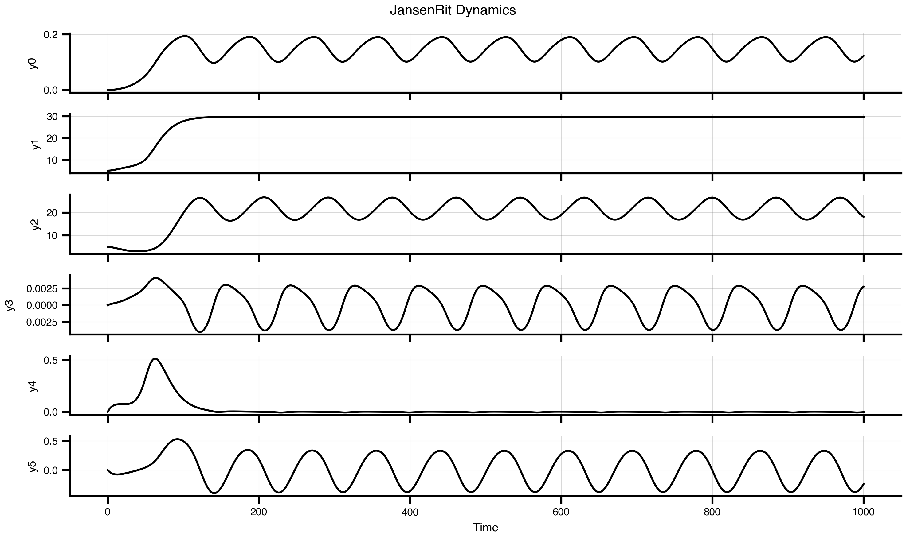
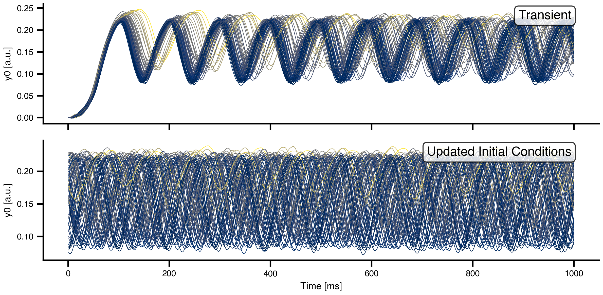
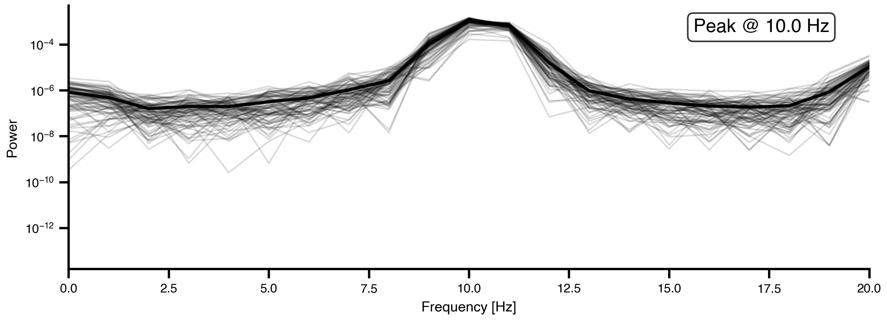
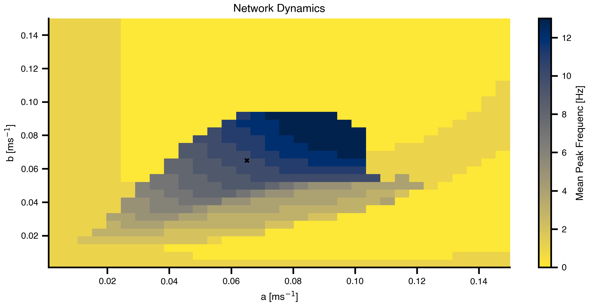
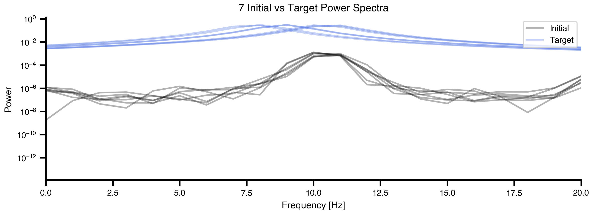
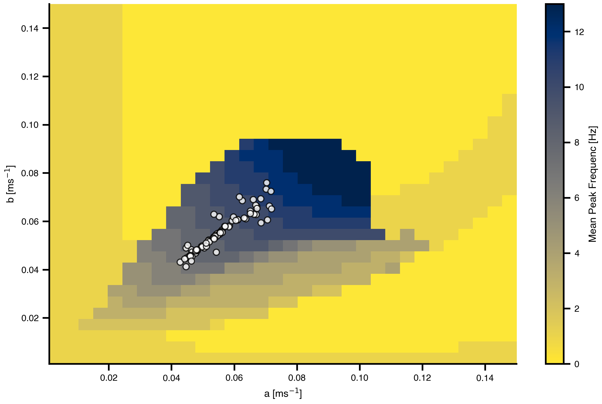
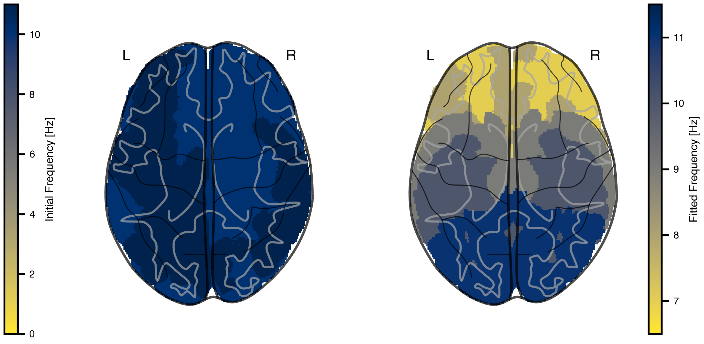

This tutorial demonstrates how to use TVB-Optim’s Network Dynamics framework to model and optimize brain network dynamics. We aim to reproduce the frequency gradient observed in resting-state MEG data, where different brain regions exhibit characteristic peak frequencies that vary with their distance from visual cortex.
What you’ll learn
Concepts: how a Jansen-Rit neural mass model produces alpha oscillations, how a and b shape peak frequency, and how delayed coupling enters a whole-brain network.
TVB-Optim idioms:Parameter(...) to mark a value optimizable, .shape = (n_nodes,) to make a parameter regional, Space(..., mode="product") for grid sweeps, @cache(...) to skip expensive reruns.
Workflow: grid exploration, target spectra design, gradient fit of region specific parameters.
Environment Setup and Imports
# Set up environment# Note: XLA_FLAGS must be set BEFORE importing jax. It controls how many# virtual CPU devices JAX exposes. We expose N=8 so ParallelExecution can# map work across 8 devices later (see `n_pmap=8` in Parameter Exploration).import osimport timecpu =Trueif cpu: N =8 os.environ['XLA_FLAGS'] =f'--xla_force_host_platform_device_count={N}'# Import all required librariesimport numpy as npimport matplotlib.pyplot as pltimport matplotlib.patheffects as path_effectsimport jaximport jax.numpy as jnpimport copyimport equinox as eqximport optaxfrom IPython.display import Markdown, displayimport pandas as pdimport nibabel as nibfrom nilearn import plotting# Import from tvboptimfrom tvboptim import preparefrom tvboptim.types import Parameter, Space, GridAxisfrom tvboptim.types.stateutils import show_parametersfrom tvboptim.utils import set_cache_path, cachefrom tvboptim.execution import ParallelExecution, SequentialExecutionfrom tvboptim.optim.optax import OptaxOptimizerfrom tvboptim.optim.callbacks import MultiCallback, DefaultPrintCallback, SavingCallback, AbstractCallback# network_dynamics importsfrom tvboptim.experimental.network_dynamics import Network, solve, preparefrom tvboptim.experimental.network_dynamics.dynamics.tvb import JansenRitfrom tvboptim.experimental.network_dynamics.coupling import LinearCoupling, SigmoidalJansenRit, DelayedSigmoidalJansenRit, AbstractCouplingfrom tvboptim.experimental.network_dynamics.graph import DenseGraph, DenseDelayGraphfrom tvboptim.experimental.network_dynamics.solvers import Euler, Heunfrom tvboptim.experimental.network_dynamics.noise import AdditiveNoisefrom tvboptim.data import load_structural_connectivityfrom tvboptim.experimental.network_dynamics.utils import print_network# Set cache path for tvboptimset_cache_path("./jr")
2 Loading Structural Data
We load the Desikan-Killiany parcellation atlas and structural connectivity data.
Load structural connectivity data
# Load volume data for visualization# Try local path first, fall back to GitHub download for Colabtry: dk_info = pd.read_csv("../data/dk_average/fs_default_freesurfer_idx.csv") dk = nib.load("../data/dk_average/aparc+aseg-mni_09c.nii.gz")exceptFileNotFoundError:import urllib.requestfrom pathlib import Path# Download from GitHub to local cache cache_dir = Path.home() /".cache"/"tvboptim"/"dk_average" cache_dir.mkdir(parents=True, exist_ok=True) base_url ="https://raw.githubusercontent.com/virtual-twin/tvboptim/main/docs/data/dk_average"for filename in ["fs_default_freesurfer_idx.csv", "aparc+aseg-mni_09c.nii.gz"]: local_file = cache_dir / filenameifnot local_file.exists():print(f"Downloading {filename}...") urllib.request.urlretrieve(f"{base_url}/{filename}", local_file) dk_info = pd.read_csv(cache_dir /"fs_default_freesurfer_idx.csv") dk = nib.load(cache_dir /"aparc+aseg-mni_09c.nii.gz")dk_info.drop_duplicates(subset="freesurfer_idx", inplace=True)# Load structural connectivity with region labelsweights, lengths, region_labels = load_structural_connectivity(name="dk_average")
3 Background: Resting State MEG
Experimental studies of resting-state brain activity using MEG have revealed a systematic gradient in oscillatory peak frequencies across cortical regions. Lower-frequency alpha oscillations (~7-8 Hz) dominate in higher-order association areas, while higher frequencies (~10-11 Hz) are observed in sensory cortices. This gradient follows the cortical hierarchy from sensory to association areas.
Figure 1: Resting State MEG Peak Frequency Gradient. Taken from: Mahjoory, K., Schoffelen, J.-M., Keitel, A., & Gross, J. (2020). The frequency gradient of human resting-state brain oscillations follows cortical hierarchies. eLife, 9, e53715. https://doi.org/10.7554/eLife.53715
4 Defining Target Frequencies
We approximate this gradient by mapping peak frequencies based on the distance from visual cortex (lateral occipital gyrus), ranging from 11 Hz at visual cortex to 7 Hz at the most distant regions.
Figure 2: Target frequency gradient based on anatomical distance. Left: White matter fiber tract lengths (mm) from each region to the lateral occipital gyrus (black outline), which approximates visual cortex in the Desikan-Killiany parcellation. Right: Target peak frequencies mapped from distance, with 7 Hz for the most distant regions and 11 Hz for visual cortex.
5 The Jansen-Rit Model
The Jansen-Rit model is a neural mass model that describes the mean activity of interconnected populations of excitatory and inhibitory neurons in a cortical column. It produces realistic alpha-band oscillations and is widely used in whole-brain modeling.
The model has three key rate parameters: a and b control the time constants of excitatory and inhibitory populations respectively, while mu sets the baseline input. These parameters determine the oscillation frequency and amplitude.
dynamics = JansenRit(a =0.075, b =0.075, mu =0.15)dynamics.plot(t1=1000, dt =1)

Figure 3: Single Jansen-Rit oscillator dynamics. Time series showing characteristic alpha-band oscillations with parameters a=0.075 ms⁻¹, b=0.075 ms⁻¹, and μ=0.15.
6 Code for the Jansen-Rit Model and Sigmoidal Coupling
View source code for JansenRit and DelayedSigmoidalJansenRit
raiseException("DO NOT RUN: View source code for JansenRit and DelayedSigmoidalJansenRit")class JansenRit(AbstractDynamics):"""Jansen-Rit model with multi-coupling support.""" STATE_NAMES = ("y0", "y1", "y2", "y3", "y4", "y5") INITIAL_STATE = (0.0, 5.0, 5.0, 0.0, 0.0, 0.0) AUXILIARY_NAMES = ("sigm_y1_y2", "sigm_y0_1", "sigm_y0_3") DEFAULT_PARAMS = Bunch( A=3.25, # Maximum amplitude of EPSP [mV] B=22.0, # Maximum amplitude of IPSP [mV] a=0.1, # Reciprocal of membrane time constant [ms^-1] b=0.05, # Reciprocal of membrane time constant [ms^-1] v0=5.52, # Firing threshold [mV] nu_max=0.0025, # Maximum firing rate [ms^-1] r=0.56, # Steepness of sigmoid [mV^-1] J=135.0, # Average number of synapses a_1=1.0, # Excitatory feedback probability a_2=0.8, # Slow excitatory feedback probability a_3=0.25, # Inhibitory feedback probability a_4=0.25, # Slow inhibitory feedback probability mu=0.22, # Mean input firing rate )# Multi-coupling: instantaneous and delayed COUPLING_INPUTS = {'instant': 1,'delayed': 1, }def dynamics(self, t: float, state: jnp.ndarray, params: Bunch, coupling: Bunch ) -> Tuple[jnp.ndarray, jnp.ndarray]:# Unpack parameters A, B = params.A, params.B a, b = params.a, params.b v0, nu_max, r = params.v0, params.nu_max, params.r J = params.J a_1, a_2, a_3, a_4 = params.a_1, params.a_2, params.a_3, params.a_4 mu = params.mu# Unpack state variables y0, y1, y2, y3, y4, y5 = state[0], state[1], state[2], state[3], state[4], state[5]# Unpack coupling inputs c_instant = coupling.instant[0] c_delayed = coupling.delayed[0]# Sigmoid functions sigm_y1_y2 =2.0* nu_max / (1.0+ jnp.exp(r * (v0 - (y1 - y2)))) sigm_y0_1 =2.0* nu_max / (1.0+ jnp.exp(r * (v0 - (a_1 * J * y0)))) sigm_y0_3 =2.0* nu_max / (1.0+ jnp.exp(r * (v0 - (a_3 * J * y0))))# State derivatives (both couplings add to excitatory interneuron) dy0_dt = y3 dy1_dt = y4 dy2_dt = y5 dy3_dt = A * a * sigm_y1_y2 -2.0* a * y3 - a**2* y0 dy4_dt = A * a * (mu + a_2 * J * sigm_y0_1 + c_instant + c_delayed) -2.0* a * y4 - a**2* y1 dy5_dt = B * b * (a_4 * J * sigm_y0_3) -2.0* b * y5 - b**2* y2# Package results derivatives = jnp.array([dy0_dt, dy1_dt, dy2_dt, dy3_dt, dy4_dt, dy5_dt]) auxiliaries = jnp.array([sigm_y1_y2, sigm_y0_1, sigm_y0_3])return derivatives, auxiliariesclass DelayedSigmoidalJansenRit(DelayedCoupling):"""Sigmoidal Jansen-Rit coupling function.""" N_OUTPUT_STATES =1 DEFAULT_PARAMS = Bunch( G=1.0, cmin=0.0, cmax=0.005, # 2 * 0.0025 from TVB default midpoint=6.0, r=0.56, )def pre(self, incoming_states: jnp.ndarray, local_states: jnp.ndarray, params: Bunch ) -> jnp.ndarray:# Extract first two state variables: y1 and y2# incoming_states[0] = y1, incoming_states[1] = y2# Each has shape [n_nodes_target, n_nodes_source] state_diff = incoming_states[0] - incoming_states[1]# Apply sigmoidal transformation exp_term = jnp.exp(params.r * (params.midpoint - state_diff)) coupling_term = params.cmin + (params.cmax - params.cmin) / (1.0+ exp_term)# Return as [1, n_nodes_target, n_nodes_source] for matrix multiplicationreturn coupling_term[jnp.newaxis, :, :]def post(self, summed_inputs: jnp.ndarray, local_states: jnp.ndarray, params: Bunch ) -> jnp.ndarray:# Scale summed coupling inputsreturn params.G * summed_inputs
7 Building the Network Model
To create a whole-brain network model, we combine four key components:
Graph: Defines the structural connectivity (weights) and transmission delays between regions
Dynamics: The local neural mass model at each node (Jansen-Rit)
Coupling: How regions influence each other through connections
Noise: Stochastic fluctuations in neural activity
# Load and normalize structural connectivityweights, lengths, _ = load_structural_connectivity(name="dk_average")weights = weights / jnp.max(weights) # Normalize to [0, 1]n_nodes = weights.shape[0]# Convert tract lengths to transmission delays (speed = 3 mm/ms)speed =3.0delays = lengths / speed# Create network componentsgraph = DenseDelayGraph(weights, delays, region_labels=region_labels)dynamics = JansenRit(a =0.065, b =0.065, mu =0.15)coupling = DelayedSigmoidalJansenRit(incoming_states=["y1", "y2"], G =15.0)noise = AdditiveNoise(sigma =1e-04)# Assemble the networknetwork = Network( dynamics=dynamics, coupling={'delayed': coupling}, graph=graph, noise=noise)
The prepare() function compiles the network into an efficient JAX function and initializes the state. We use the Heun solver (a second-order Runge-Kutta method) for numerical integration. Using solve() runs the simulation dirctly and is usefull for quick prototyping.
# Prepare simulation: compile model and initialize statet1 =1000# Simulation duration (ms)t1_init =20000# Simulation duration (ms)dt =1.0# Integration timestep (ms)model, state = prepare(network, Heun(), t1 = t1_init, dt = dt)# result = solve(network, Heun(), t1 = t1_init, dt = dt)
9 Running Simulations
We run two consecutive simulations: the first allows the network to reach a quasi-stationary state from random initial conditions (transient), and the second continues from the settled state.
# First simulation: transient dynamicsresult = model(state)# Update network with final state as new initial conditionsnetwork.update_history(result)model, state = prepare(network, Heun(), t1 = t1, dt = dt)# Second simulation: quasi-stationary dynamicsresult2 = model(state)

Figure 4: Network dynamics from transient and quasi-stationary simulations for y0. Top: First 1000 ms showing transient behavior from random initial conditions. Bottom: Dynamics after the network has settled into a quasi-stationary state. Each line represents one brain region, colored by mean activity level.
10 Spectral Analysis
To compare our simulations with the target MEG frequency gradient, we need to compute power spectral densities (PSDs) for each brain region. We define helper functions using Welch’s method for spectral estimation. Building obervations progessively by enclosing them in functions is a common pattern in JAX.
def spectrum(state):"""Compute power spectral density for each region using Welch's method.""" raw = model(state)# Subsample by a factor of 10 to get 100 Hz sampling rate f, Pxx = jax.scipy.signal.welch(raw.data[::10, 0, :].T, fs=np.round(1000/dt /10))return f, Pxxdef avg_spectrum(state):"""Compute average power spectrum across all regions.""" f, Pxx = spectrum(state) avg_spectrum = jnp.mean(Pxx, axis=0)return f, avg_spectrumdef peak_freq(state):"""Extract mean peak frequency from average spectrum.""" f, S = avg_spectrum(state) idx = jnp.argmax(S) f_max = f[idx]return f_max# Calculate spectra for visualizationf, S = jax.block_until_ready(avg_spectrum(state))f, Pxx = jax.block_until_ready(spectrum(state))

Figure 5: Power spectral density of initial network dynamics. Gray lines show individual region spectra, while the black line shows the network-average spectrum. With homogeneous parameters (a=0.04, b=0.04 for all regions), the network exhibits a single dominant peak frequency.
11 Parameter Exploration
Before attempting optimization, it’s useful to understand the relationship between the Jansen-Rit parameters (a and b) and the resulting peak frequency. We perform a grid search over parameter space to map out this relationship.
The Space and GridAxis classes from TVB-Optim make it easy to define parameter grids, and ParallelExecution efficiently evaluates the model across all grid points in parallel.
# Create grid for parameter explorationn =32# Replace scalar values with GridAxis(...) to mark them as sweep axes.# Each axis defines `n` linearly spaced values to try.grid_state = copy.deepcopy(state)grid_state.dynamics.a = GridAxis(low =0.001, high =0.15, n = n)grid_state.dynamics.b = GridAxis(low =0.001, high =0.15, n = n)# Space wraps the state into an iterable of all parameter combinations.# mode="product" gives the Cartesian product (n*n evaluations).grid = Space(grid_state, mode ="product")# @cache stores the function output on disk under the given key. On rerun,# the cached result is loaded instead of recomputing. Set redo=True to force.@cache("explore", redo =False)def explore():# n_pmap=8 maps evaluations across 8 JAX devices in parallel, matching# the XLA_FLAGS device count set at the top of the notebook.exec= ParallelExecution(peak_freq, grid, n_pmap=8)# Alternative: Sequential execution# exec = SequentialExecution(jax.jit(peak_freq), grid)returnexec.run()exploration_result = explore()

Figure 6: Mean Peak Frequenc landscape across parameter space. The heatmap shows how the network’s dominant frequency varies with the excitatory (a) and inhibitory (b) time constants. This landscape guides our optimization by showing which parameter combinations can produce the desired 7-11 Hz frequency range.
12 Creating Target Spectra
To define optimization targets, we model each region’s desired spectrum as a Cauchy (Lorentzian) distribution centered at the target Mean Peak Frequenc. This gives a realistic spectral shape with a clear peak.
Show code for target spectra generation and plotting
def cauchy_pdf(x, x0, gamma):"""Cauchy distribution for modeling spectral peaks."""return1/ (np.pi * gamma * (1+ ((x - x0) / gamma) **2))# Create target PSD for each regiontarget_PSDs = [cauchy_pdf(f, fp, 1) for fp in peak_freqs]target_PSDs = jnp.vstack(target_PSDs)# Visualize initial vs target spectra for a subset of regionsfig, ax = plt.subplots(figsize=(8.1, 3.0375))n_show =7for (y, y2) inzip(Pxx[:n_show], target_PSDs[:n_show]): ax.plot(f, y, alpha =0.3, color ="k", linewidth=1.5) ax.plot(f, y2, alpha =0.3, color ="royalblue", linewidth=1.5)ax.set_xlabel('Frequency [Hz]')ax.set_ylabel('Power')ax.set_title(f'{n_show} Initial vs Target Power Spectra')ax.set_xlim(0, 20)ax.set_yscale('log')ax.legend(['Initial', 'Target'], loc='upper right')plt.tight_layout()

Figure 7: Comparison of initial and target spectra. Black lines show the current power spectra from 7 example regions (with homogeneous parameters). Red lines show the corresponding target spectra with region-specific peak frequencies based on the MEG gradient. The goal of optimization is to match the black lines to the red lines for all 84 regions.
13 Defining the Loss Function
The loss function quantifies how well the model’s spectra match the target spectra. We use correlation between predicted and target power spectra as our similarity metric. The loss is defined as 1 minus the mean correlation across all regions, so minimizing the loss maximizes spectral similarity.
def loss(state):""" Compute loss as 1 - mean correlation between predicted and target PSDs. Lower loss means better match between model and target spectra. """# Compute the power spectral density from the current state frequencies, predicted_psd = spectrum(state)# Calculate correlation coefficient between each predicted PSD and its target# vmap applies the correlation function across all PSD pairs in parallel correlations = jax.vmap(lambda predicted, target: jnp.corrcoef(predicted, target)[0, 1] )(predicted_psd, target_PSDs)# Return 1 minus the mean correlation as the loss# (we want to minimize this, which maximizes correlation) average_correlation = correlations.mean() aux_data = predicted_psd # Used for plotting during optimizationreturn (1- average_correlation), aux_data# Test loss functionloss(state)
Now we use gradient-based optimization to find region-specific parameters a and b that produce the target frequency gradient. We mark parameters as optimizable using the Parameter class and set their shape to be region-specific (heterogeneous).
TVB-Optim integrates with optax for optimization, providing automatic differentiation through JAX. We use the AdaMax optimizer with callbacks for progress monitoring.
# Wrap values in Parameter(...) to mark them as optimizable. The optimizer# walks the state tree, finds every Parameter, computes gradients, and# updates them in place. Plain values stay frozen.# Setting .shape = (n_nodes,) promotes the scalar into a per-region vector,# initialized by broadcasting. Each region then gets its own gradient.init_state = copy.deepcopy(state)init_state.dynamics.a = Parameter(init_state.dynamics.a)init_state.dynamics.a.shape = (n_nodes,)init_state.dynamics.b = Parameter(init_state.dynamics.b)init_state.dynamics.b.shape = (n_nodes,)# Set up callbacks for monitoringcb = MultiCallback([ DefaultPrintCallback(every=10), # Print progress PlotCallback(every=10),])# Create optimizeropt = OptaxOptimizer(loss, optax.adamaxw(0.001), callback = cb, has_aux=True)@cache("optimize", redo =False)def optimize(): fitted_params, fitting_data = opt.run(init_state, max_steps=151)return fitted_params, fitting_datafitted_params, fitting_data = optimize()
Loading optimize from cache, last modified 2026-05-10 09:17:55.895951
15 Optimization Results: Parameter Distribution
Let’s visualize where the optimizer placed each region’s parameters in the frequency landscape we explored earlier.

Figure 8: Optimized parameters overlaid on the frequency landscape. Each white dot represents the fitted (a, b) parameters for one brain region. The optimizer has distributed regions across parameter space to achieve their target frequencies in the 7-11 Hz range.
16 Optimization Results: Frequency Maps
Finally, let’s visualize the fitted frequency gradient in brain space and compare it to the initial homogeneous state.

Figure 9: Comparison of initial and fitted frequency gradients. Left: Initial homogeneous network showing similar frequencies across all regions. Right: Fitted frequency gradient matching the target MEG pattern, with lower frequencies in association areas and higher frequencies in sensory cortex.
17 Exercises & Exploration
Different anchor region. Re-run target generation using a non-visual anchor (e.g. insula or precentral gyrus) as the high-frequency end of the gradient. Does optimization still recover a smooth gradient, or does the structural connectivity dictate which gradients are reachable?
Optimize mu instead of (a, b). Make mu a regional Parameter and freeze a, b. With only one knob per region, does the fit get worse, or does it match comparably while being easier to interpret?
Loss choice. Swap 1 - mean(corr) for MSE on log-PSD, or for peak-frequency MSE directly. Which loss converges faster, and which produces better-looking spectra at convergence?
Optimizer / learning rate. Compare optax.adamaxw(0.001) (current) with optax.adam(0.01) and optax.sgd. Vary the learning rate. Does the AdaMax choice carry its weight here?
Simulation length vs spectral resolution.t1 = 1000 ms gives roughly 1 Hz Welch resolution. Try t1 = 5000 ms (and adjust the Welch settings if needed). Does the fit get sharper, or just slower?